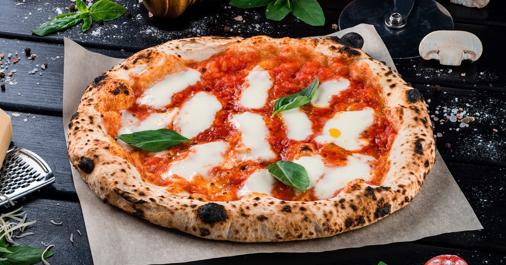

Crunchy pizza
That's it, i'm gonna tell you how i made my own crunchy pizza, and, with a little of practice, you can make it by
yourself.
This is the ammount of ingredients that i usually use for 1 pizza
Ingredients
The Dough
- 2 cups bread flour
- 1/2 cup water
- 1 teaspoon salt
- 10g dry yeast
The Sauce
- 3 tomatoes
- 1 onion
- garlic cloves
- sunflower oil
Directions
- To make the dough: in a bowl, put the 2 cups of bread flour, make a hole, in that hole put all the 1/2 cup
of water and in the
water put the dry yeast
- With your hands, start kneading until smooth
- Let rest until the yeast ferments the dough, ussually takes 12 hours
- To make the sauce: chop the onions, garlic and tomatoes in tiny cubes
- In a casserole, add a little of sunflower oil
- Put the cubes of onion, garlic and tomatoes en the casserole until all the sunflower oil cook the
ingredients
- Before ever you touch the dough, power on the oven at the max temperature
- Take the fermented dough and knead it until it shaped
- Put the shaped dough in a pizza pan
- Add the sauce over the dough
- Now, you can add whatever you want (except pineapple, shame of you)
- Put the pizza on the oven, and wait until the dough is crispy
- Take the piiza out of the oven, and that it, your masterpiece
Home